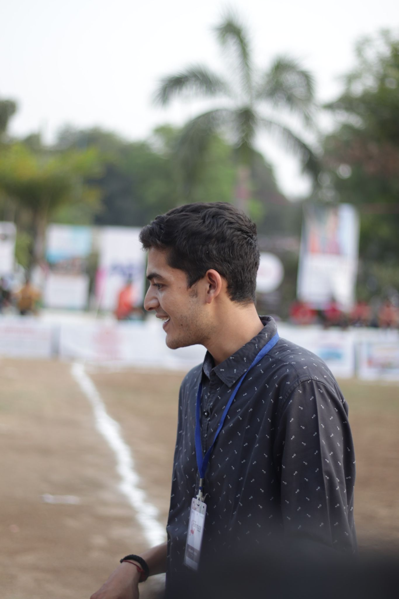

I am Vedant
A Digital Marketing Student

Hello
A committed learner with in-depth expertise in a variety of
marketing and business-related subjects. Studying for a master's in
digital marketing and channel management at the University of
Surrey. This curriculum will be extremely helpful for me in
achieving my objective of contributing to, adding to, and growing my
family's business.
About Me
The gainful utilisation of time is instilled by my family. I grew up
watching my parents work tirelessly to launch and grow the business.
During my bachelor's , as a part-time apprentice under him, I gained
first-hand knowledge about everything a business owner needs to
know. In the future, I aspire to honour the efforts of my parents by
scaling this business up to a level we can all be proud of. I hope
to be someone trusted to bring solutions backed by solid scrutiny
and a fresh perspective.
Skills
Marketing
My bachelor’s in business administration with a first-class
distinction ensured a solid theoretical foundation. Through the
three years, I also doused myself with projects and case studies
to gain first-hand experience of analytical methods and critical
thinking. With the help of summer internships I gained experience
about the market which made my marketing base stronger.
Digital Marketing
I can see several ways to improve some of the cultural norms and
business codes. First, I see scope to help teams move beyond their
habitual thinking blocks and inspire them to imagine alternate
possibilities. My goal will be to end all assumptions and invite
new thinking. Second, I will use the techniques I learn here to
infuse empathy for the end user into the employees. A culture of
walking in their shoes and experiencing their pain points will
help the organisation come up with apt changes. Third, I will be
better equipped to recognise the promising ideas that flutter into
my mind or life.
Contact Number :
+44 7810452439